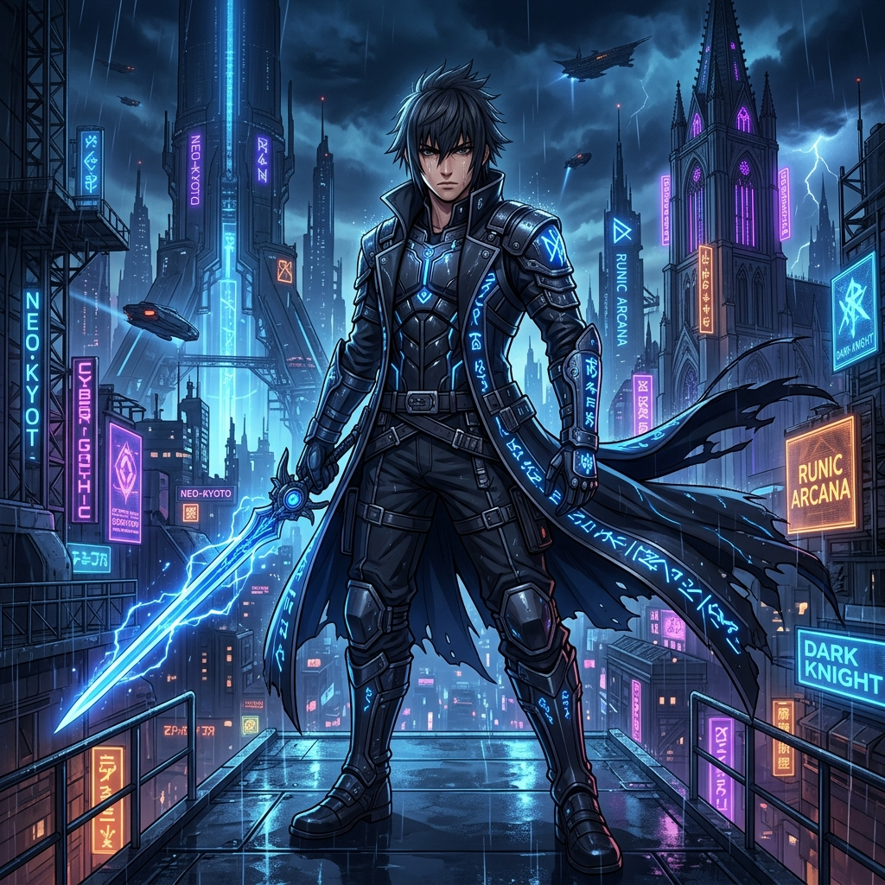

Noctis es un guerrero formidable con un secreto aterrador: dentro de él duerme un poder destructivo que surge con la furia. Acompaña a Noctis en su lucha por controlar sus sombras y salvar la ciudad de Nocturnia.
Las sombras invaden los suburbios. Noctis debe probar sus habilidades básicas de combate.
Patrullas de sombras pesadas bloquean el puente hacia la antigua fortaleza ancestral.
Kaelen intenta provocar la furia de Noctis para convertirlo en la nueva amenaza que el mundo tema.
Ruinas subterráneas impregnadas de magia rúnica donde acechan sombras asesinas velozmente.
El santuario en las alturas sobre cielos de tormenta, donde el abismo intenta corromper a Noctis.
Noctis se enfrenta a la encarnación de su propia furia descontrolada en un duelo a muerte.
La batalla final por Nocturnia. Domina la furia para salvar la ciudad y convertirte en el héroe definitivo.
Tras la caída de Malakor, una energía antigua despierta en las ruinas del trono. Noctis siente una fuerza más profunda que la oscuridad.
Elias Thorn aparece. Un bosque encantado donde los espíritus de guerreros caídos atacan sin piedad. Cada árbol esconde un enemigo.
Una fortaleza mecánica alimentada por energía sombría. Las máquinas de guerra de Malakor aún operan sin su amo.
Un asesino legendario enviado a eliminar a Noctis. Más rápido que cualquier sombra, ataca desde las alturas.
Las profundidades de un océano corrupto. Criaturas abisales rodean a Noctis mientras busca la Reliquia del Silencio.
The Dark Crow ataca. Elias Thorn hace el sacrificio definitivo para salvar a Vanguard Eclipse.
Una torre que distorsiona el tiempo. Los enemigos aparecen y desaparecen entre las dimensiones temporales.
Un valle donde cristales gigantes amplifican el poder oscuro. Cada cristal roto libera oleadas de sombras.
La base de operaciones de la Orden Carmesí, una facción de guerreros corruptos por la sangre de Malakor.
Silas Kane revela su verdadera lealtad. Vanguard Eclipse debe enfrentar a uno de los suyos.
La verdadera maestra detrás de Malakor revela su identidad. Nyx controla la oscuridad misma con poder absoluto.
El enfrentamiento final contra VOID, la entidad primordial que creó toda la oscuridad. El destino de la realidad está en juego.
Incrementa el daño de la espada de Noctis.
Genera furia más rápido al golpear enemigos.
Aumenta la resistencia de Noctis a los ataques oscuros.
Incrementa el radio y daño de la granada expansiva.
Noctis ha demostrado un control legendario sobre sus poderes.